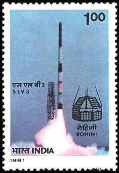

Aryabhata Satellite (1975)
Aryabhata was India's first satellite, named after the astronomer. It was launched on 19 April 1975 from Kapustin Yar, a Soviet rocket launch and development site in Astrakhan Oblast, using a Kosmos-3M launch vehicle. It was built by ISRO and launched by the Soviet Union as a part of the Soviet Interkosmos programme, which provided access to space for friendly states.It was launched by India on 19 April 1975 from Kapustin Yar, a Russian rocket launch and development site in Astrakhan Oblast using a Kosmos-3M launch vehicle. The satellite was built by the Indian Space Research Organisation (ISRO). The launch was part of an agreement between India and the Soviet Union directed by UR Rao and signed in 1972. This agreement allowed the USSR to use Indian ports for tracking ships and launching vessels in return for launching various Indian satellites.On 19 April 1975, the satellite's 96.46-minute orbit had an apogee of 619 kilometres (385 mi) and a perigee of 563 kilometres (350 mi), at an inclination of 50.7 degrees. It was built to conduct experiments in X-ray astronomy, aeronomics, and solar physics. The spacecraft was a 26-sided polyhedron 1.4 metres (4.6 ft) in diameter, with all faces (except the top and bottom) covered with solar cells.A power failure halted experiments after four days and 60 orbits, with all signals from the spacecraft lost after five days of operation. However, the spacecraft mainframe remained active until March 1981. Eventually, the satellite entered Earth's atmosphere on 10 February 1992 due to orbital decay.
Rohini Satellite (1980)
Rohini Satellite 1 (RS-1) was launched on July 18, 1980, at 8:04 AM IST from the Satish Dhawan Space Centre using the SLV (Satellite Launch Vehicle). The satellite achieved an orbit of 305 km × 919 km with an inclination of 44.7°, successfully reaching its intended trajectory just eight minutes after liftoff. Weighing 35 kg, RS-1 was spin-stabilized and equipped with instruments such as a digital Sun sensor, magnetometer, and temperature sensors, generating 16 watts of power through solar panels. Its mission life was designed for 1.2 years, with an orbital lifespan of approximately 20 months, providing valuable data on the fourth stage of the SLV. The budget for the SLV project, including the satellite, was around ₹38 million (approximately $1 million at the time), reflecting India's significant investment in advancing its space capabilities despite earlier launch failures.
INSAT-1B Satellite (1983)
INSAT-1B was an Indian communications satellite launched in 1983 as part of the Indian National Satellite System. Operating in geostationary orbit at 74 degrees east, it had a design life of seven years but was eventually replaced by INSAT-1D, becoming a backup satellite. In 1992, it was relocated to 93 degrees east and was decommissioned in August 1993. Built by Ford Aerospace, INSAT-1B weighed 1,152 kg at launch and featured twelve C band and three S band transponders powered by a solar array. Deployed by Space Shuttle Challenger during the STS-8 mission, it encountered initial issues with its solar array but became operational by October 1983. After decommissioning, it was moved to a graveyard orbit above geosynchronous altitude and remains there, with its last known orbit parameters as of November 2013.
PSLV (1994)
The Polar Satellite Launch Vehicle (PSLV) development began in 1978 under S. Srinivasan, aiming to deliver a 600 kg payload to a 550 km sun-synchronous orbit. After evaluating 35 configurations, a design was finalized featuring a solid core first stage and a liquid-fueled second stage. By 1981, the goals shifted to delivering a 1000 kg payload to a 900 km orbit. The first PSLV launch occurred on September 20, 1993, but an attitude control issue caused the payload to fail to reach orbit. Despite this setback, the PSLV successfully completed its second mission in 1994 and has since become a reliable launcher, with no failures after 1997, aside from one in 2017. PSLV supports Indian and foreign satellite launches, especially for low Earth orbit, and underwent numerous upgrades over the years. Notably, it launched India's Mars Orbiter Mission in 2013. In June 2018, the Indian government approved ₹6,131 crore for 30 operational flights from 2019 to 2024, and ISRO is transitioning PSLV production to private industry. In 2022, a contract was signed with Hindustan Aeronautics Limited and Larsen & Toubro for five PSLV-XL vehicles, signaling increased private sector involvement in India's space program.

GSLV (2001)
The Geosynchronous Satellite Launch Vehicle (GSLV) project was initiated in 1990 to
establish India's capability to
launch geosynchronous satellites. GSLV incorporates proven components from the Polar Satellite Launch
Vehicle (PSLV), including
the S125/S139 solid rocket boosters and the liquid-fueled Vikas engine. To achieve the thrust necessary
for geostationary
transfer orbit (GTO), a cryogenic upper stage powered by a LOX/LH2 engine was included, although India
lacked this technology
at the time.
The first GSLV development flight (Mk I) launched on April 18, 2001, but failed to
reach its intended orbit.
The rocket was declared operational after the successful second flight, which launched the GSAT-2
satellite. From its initial
launch until 2014, GSLV had a mixed record, with only two successful missions out of seven, earning it
the nickname "naughty
boy."
Standing 49 meters tall and with a lift-off mass of 415 tons, the GSLV is a three-stage
vehicle featuring solid,
liquid, and cryogenic stages. It has a payload fairing measuring 7.8 meters long and 3.4 meters in
diameter, which protects
the vehicle's electronics and spacecraft during ascent. The GSLV employs S-band telemetry and C-band
transponders for vehicle
monitoring, with a redundant inertial navigation system guiding the launch from lift-off to payload
injection. The GSLV can
deliver approximately 5,000 kg to a low Earth orbit (LEO) or 2,500 kg to a geostationary transfer orbit
(for the Mk II version).
Chandrayaan-1 (2008)
Chandrayaan-1, India's inaugural mission to the Moon, was launched on October 22, 2008,
from the Satish Dhawan Space Centre
(SDSC) SHAR in Sriharikota. This mission marked a significant milestone for India's space exploration
efforts, aiming to enhance our
understanding of the Moon's surface and composition.
Once in orbit, Chandrayaan-1 operated at an
altitude of 100 km above the
lunar surface, utilizing a suite of 11 scientific instruments developed by various institutions in
India. These instruments were
designed for comprehensive chemical, mineralogical, and photo-geologic mapping of the Moon. Key
objectives included identifying and
mapping the distribution of various elements and minerals, as well as studying the Moon's topography and
surface features.
In May
2009, after successfully completing its primary mission objectives, the spacecraft's orbit was raised to
200 km to extend its operational
capabilities. Over its mission, Chandrayaan-1 completed more than 3,400 orbits around the Moon,
collecting a wealth of data that contributed
to our understanding of lunar geology and mineralogy.
The mission was particularly notable for its
discovery of water molecules on the
lunar surface, a groundbreaking finding that has influenced subsequent lunar research and exploration
strategies. Unfortunately,
communication with the spacecraft was lost on August 29, 2009, marking the conclusion of the mission.
Despite its relatively short
operational life, Chandrayaan-1 was a resounding success, paving the way for future Indian lunar
missions and solidifying India's position
in the global space exploration community.
Mangalyaan (2013)
The Mars Orbiter Mission (MOM), or Mangalyaan, was launched by the Indian Space Research
Organisation (ISRO) on November 5, 2013, making
it India's first interplanetary mission. It successfully entered Mars orbit on September 24, 2014,
positioning India as the first Asian nation
to reach Mars and the fourth globally, following the Soviet Union, NASA, and the European Space Agency.
The mission launched from the
Satish Dhawan Space Centre using a Polar Satellite Launch Vehicle (PSLV) and spent a month in Earth
orbit before executing a trans-Mars
injection. MOM carried five scientific instruments designed for studying the Martian surface and
atmosphere, and it was monitored from ISRO's
control center in Bengaluru.
On October 2, 2022, ISRO announced that MOM had lost communication with
Earth after entering a long eclipse period in
April that it was not designed to endure, ultimately declaring the mission inactive.
The MOM concept
originated in 2010,
and it was approved in August 2012. The mission was accomplished at a cost of about ₹454 crore
(approximately $54 million), utilizing technology
from the Chandrayaan-2 orbiter. MOM's success also facilitated collaboration with NASA for communication
support, laying groundwork for future
joint missions.
Chandrayaan-2 (2019)
Chandrayaan-2, launched by the Indian Space Research Organisation (ISRO) on July 22,
2019, is India's second lunar exploration mission,
consisting of an orbiter, the Vikram lander, and the Pragyan rover. Its primary objective is to map the
Moon's surface composition and locate water resources.
The mission launched from the Satish Dhawan Space Centre aboard a GSLV Mk III M1 rocket, reaching
lunar orbit on August 20, 2019. The Vikram lander
attempted to make a soft landing on September 6, 2019, but unfortunately crashed due to a software
error. Despite this setback, the lunar orbiter continues
to operate and gather scientific data.
The development of Chandrayaan-2 began in collaboration with
Roscosmos, but India eventually took full
responsibility for the lander and rover after delays from the Russian side. The mission was initially
scheduled for launch in 2018 but faced multiple
postponements due to technical issues.
The scientific goals of the orbiter include studying lunar
topography, mineralogy, and the distribution of
water ice, particularly in the south polar region. The mission's total cost was approximately ₹9.78
billion (around $141 million), with the spacecraft
weighing about 3,850 kg (8,490 lb) at launch.
Chandrayaan-2 exemplifies ISRO's growing capabilities
in space exploration and paves the way for future
missions, including the successful Chandrayaan-3, launched in 2023.
Chandrayaan-3 (2023)
Chandrayaan-3 is India's third lunar mission, developed by the Indian Space Research
Organisation (ISRO). It consists of a Vikram lander and a
Pragyan rover, launched on July 14, 2023, from the Satish Dhawan Space Centre. The spacecraft
successfully entered lunar orbit on August 5, 2023, and on August
23, it became the first to land near the lunar south pole at 69°S, making India the fourth country to
achieve a soft landing on the Moon, following the USSR,
NASA, and CNSA.
The mission aims to explore the south pole region, which is believed to contain
significant amounts of ice. This ice could provide valuable
insights into lunar history and serve as a resource for future human missions, offering oxygen, drinking
water, and fuel.
The Vikram lander, while not
designed to withstand the lunar night, operated for 12 days after landing before sunset ended its
surface mission. However, the propulsion module remains
functional, having transitioned back to a high Earth orbit for continued observations.
The
Chandrayaan-3 mission also features a Laser Retroreflector
Array (LRA) on the Vikram lander, which is part of an international collaboration with NASA. This
instrument allows precise location tracking from lunar orbit.
Key objectives of the mission include:
1. Engineering a successful soft landing on the Moon.
2. Demonstrating the Pragyan rover's capabilities on the lunar surface.
3. Conducting experiments to analyze the lunar surface composition.
Chandrayaan-3 builds on the lessons learned from Chandrayaan-2, which faced a landing failure in
2019, furthering India's lunar exploration efforts.
Aditya L1 (2023)
Aditya-L1 is India's first dedicated solar mission, developed by the Indian Space
Research Organisation (ISRO) to study the Sun's atmosphere. It is
positioned about 1.5 million kilometers from Earth in a halo orbit around Lagrange Point 1 (L1), where
it will investigate solar magnetic storms and their
effects on the Earth's environment. The mission aims to enhance our understanding of solar dynamics and
space weather.
Launched aboard PSLV C57 on
September 2, 2023, Aditya-L1 successfully entered its intended orbit and was placed at the L1 point on
January 6, 2024.
Mission Objectives
The key objectives of Aditya-L1 include:
- Observing the dynamics of the Sun's chromosphere and corona.
- Studying coronal heating, the physics of coronal mass ejections (CMEs), and their
origins.
- Investigating the particle environment at L1.
- Analyzing processes leading to solar eruptions.
- Studying the composition and dynamics of solar wind.
History
The mission was conceptualized in January 2008 and initially planned as a smaller
satellite in low Earth orbit. However, it was later expanded
into a comprehensive observatory for solar and space environment studies at L1, with a budget of ₹378
crores.
On January 11, 2024, ISRO successfully deployed
a 6-meter magnetometer boom equipped with high-accuracy sensors to measure the interplanetary magnetic
field. This dual-sensor system minimizes the spacecraft's
magnetic influence on measurements, ensuring accuracy in data collection.
Aditya-L1 represents a
significant advancement in India's capabilities for solar
observation and research, contributing to global efforts in understanding solar dynamics and space
weather phenomena.